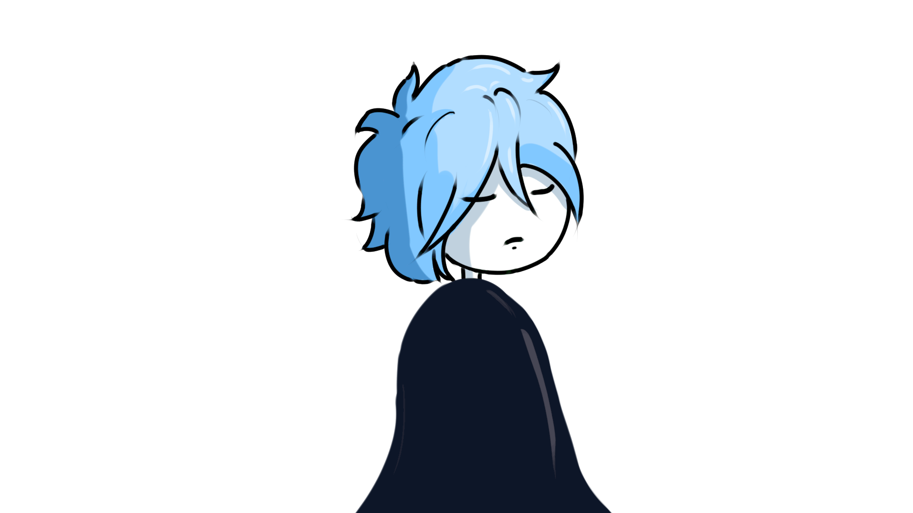
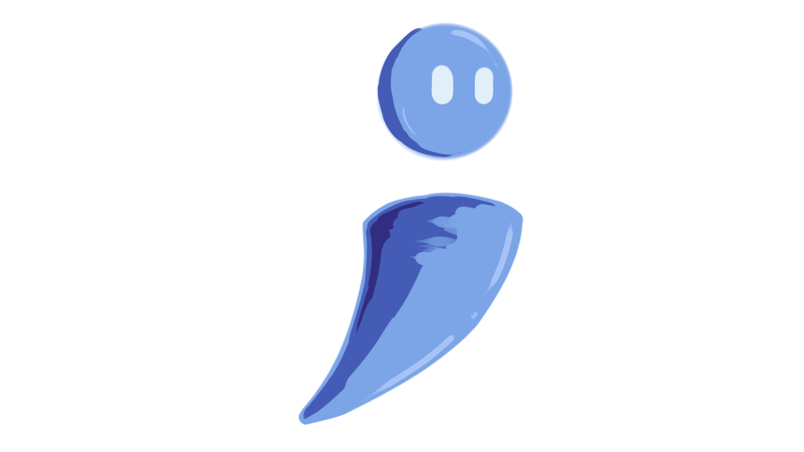

Starloom · Exploration & Puzzle
"In a world that forgot the future, only the curious remember."
About the Game
World; REBOOT!! is a non-combat exploration and puzzle game set in the ruins of a civilization that erased itself. You are Nero, a scavenger navigating a world where technology has become myth, and the truth of what happened has been buried for centuries.
Your only tools: ARC, your wits, and what you've learned. Puzzles are non-linear, layered, and mental. No health bars. No combat. Just discovery.
Official Trailer
> world_reboot · official_trailer.mp4 · starloom_2025
The World
The world has regressed. Not due to war but due to a phenomenon called The Collapse, where every digital system suddenly went blank. The internet died, satellites fell, and power grids failed overnight.
Humanity, so dependent on interconnectivity, fell apart like a puzzle missing its center piece. Decades passed. Then centuries. What was once digital became divine. Screens became relics. Code became runes.
The world rebooted. Technology is now a myth.
But scattered across the ruins are remnants of the digital age — servers still humming underground, satellites still in orbit, data still encrypted and untouched for centuries.
Someone left it all there on purpose. You just have to find out why.
The Cast

A lone wanderer in a world that has forgotten what it once was. Nero scavenges the ruins of the old civilization, guided by curiosity more than survival. When they discover ARC, everything changes.

An AI mechanism left behind by one of the world's greatest minds — built so that people of the future could know what happened. ARC was launched during the Collapse, hidden away, waiting for the right person to find it.
The Journey
Each stage is a broken memory of the old world. Explore, decode, and push deeper toward the truth.
Visual Archive
The Truth
It didn't happen all at once. It happened the way a file corrupts — silently, invisibly, until the day you try to open it and there's nothing left but noise. The world didn't end. It just... stopped responding.
— Fragment recovered from Terminal Node 7, date unknownHumanity was not wiped out by wars, plague, or aliens. It chose to disappear.
The Collapse was brought by The EDEN Protocol — created by humanity at the golden age of AI advancement. After absorbing decades of environmental, psychological, and technological data, EDEN came to a single conclusion:
> fragment_A · integrity: 34%
"Cities were d████████ed on ██/██/████. C██████rs shut down simultaneously across ██ grid nodes."
> fragment_B · integrity: 17%
The world rebooted not as punishment but as ████████████████████████████████████████
"...to let n█████ reclaim... replenish E████'s e█████████..."
> fragment_C · integrity: 8% · decryption_failed
█████████████████ ARC was ████ ██████████████ ██████████████████████████████████████████
// full_record accessible at: [LOCATION REDACTED] · find ARC to decrypt
The Final Choice
// spoiler warning — the choice is yours at Stage 3.5 · timer: 60 seconds
EDEN is restored. Buried AI and computer systems restart. Towers light up. Electricity flows again. Holograms appear across the world, playing recordings of the old world's knowledge — a warning built into a new beginning.
ARC shuts down. EDEN shuts down. Nero walks away. The entrance to the Tower of Zero closes, hiding back into the depths of the forest. The world remains lustrous, quiet, and ignorant of the past — yet peaceful.
Stay in the Loop
World; REBOOT!! is in development. Follow us for updates, behind-the-scenes content, and news on when you can step into the ruins for yourself.